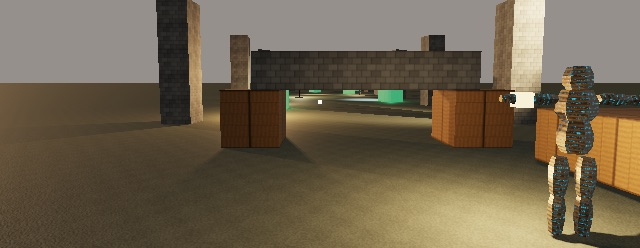

WINDAGE ENGINE
WINDAGE ENGINE
Docs / Start
Get started
Windage Engine is a Swift package. Add it, run the sample game that ships with it, then play that game by script and check it the way the engine checks itself.
macOS 26+Swift 6.2Metal 4 GPU
-
Add the package
In your game's
Package.swift:dependencies: [ .package(url: "https://github.com/Pixla-app/WindageEngine.git", from: "1.0.0") ] -
Run the sample
A complete small game — two levels, an editor, sound, a save — written against the public API only. It opens with the engine's splash; any key skips it and still does what it was pressed for.
swift run WindageSample

The ruins at eye height, drawn by the sample. -
Play it by script
Keys and seconds, pressed through the same path a keyboard uses. The log says where the feet ended each segment.
WINDAGE_SAMPLE_LEVEL=1 \ WINDAGE_SAMPLE_WALK="d:0.7 w:1.0 w:0.4 wait:1" swift run WindageSample WindageSample: walk 'w:1.0' → feet (4.20, 1.20, -0.00), highest 1.20, on the ground, eye 1.69 m up
-
Check it
Tests, every recorded walk, and every recorded frame — the three checks the engine runs on itself before a change is called done.
swift test python3 Tools/walks.py python3 Tools/frames.py